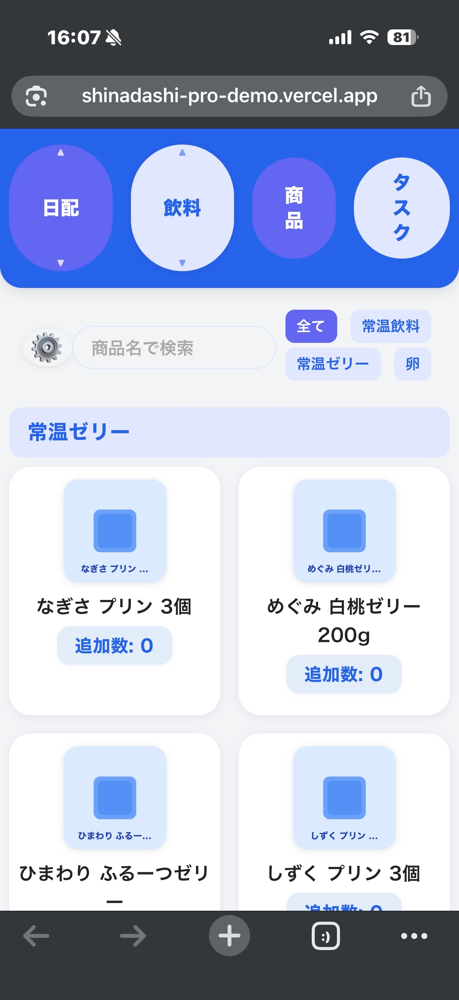
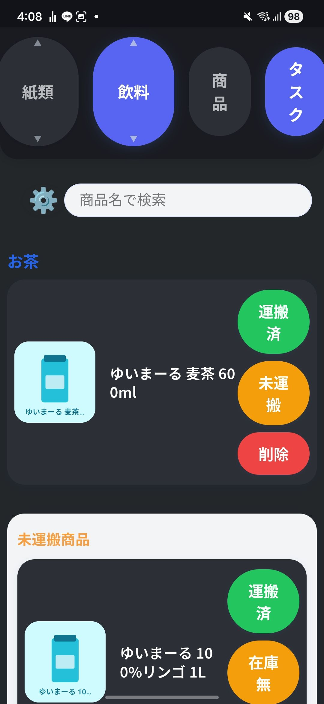

実績紹介
品出しアシスタント Pro
スーパーマーケットのバックヤード品出し作業を効率化するWebアプリ。
「画面の都合」ではなく「現場の物理・身体・認知」に合わせて設計し、現在もアルバイト先で運用を続けています。


概要
「これ、どこの棚だっけ？」「あと何箱運ぶんだっけ？」――。
これまで個人の経験と記憶に頼っていた品出し業務を、新人でも迷わず動けるWebアプリに置き換えました。
自分自身のバイトの疲労蓄積が「楽にしたい」という動機になり、2025年8月に開発を開始。
一度すべてを作り直す判断を経て、現在は自分と新人スタッフ数名が実際の現場で使っています。
課題・背景
品出しでは、商品の場所や補充数の確認に時間がかかり、「運んだっけ？」の抜け漏れも起きやすい状態でした。 特に新人は、商品名を見ても棚の現物と結びつかず、探すのに時間を取られます。 自分自身も本来は他のスタッフを手伝いたい時間をこの作業に費やしており、店舗全体の非効率を肌で感じていました。 「個人の頑張りで耐える」のではなく「仕組みで解決する」発想に置き換えたのが、このアプリの出発点です。
設計で大事にした6つのこだわり
すべて「現場の観察」から導いた設計判断です。共通する原則は「画面の都合ではなく、現場の物理・身体・認知に合わせる」こと。
ジグザグ順の商品配置
売り場を巡回する視線の動き（左上→右上→左下→右下）に合わせてリストを並べ、画面と現場の往復をなくした。
高棚→低棚のタスク順
表示順どおりに台車へ積めば、重い物を下から出さずに済む。UI設計で腰への身体的負担まで軽減した。
商品名でなく画像で管理
新人は名前より見た目で棚を探す。リストを画像主体にして、識別と習熟を早めた。
在庫無しはグレーアウト
「これありますか？」の接客に即答できるよう、在庫切れを一目で判別可能にし、無駄な確認動作を削減。
3ステータスで運搬管理
「運搬済／未運搬／在庫無」の3つに絞り、片手操作の負荷を抑えながら作業漏れを防止。
バックヤードと同じ区分け
アプリのカテゴリーを在庫のカート分けと完全対応させ、画面とバックヤードの「探し直し」をゼロに。
工夫した点・技術的なこだわり
- 一度すべて作り直す判断
最初の仮完成版（AI主導で約10日で生成）は、現場知識が十分に反映されていませんでした。そこで「禁止事項・やりたいこと・仕事内容」を自分で構造化してAIに渡し、AI主導で全面的に作り直しました。改善サイクルを自分で回せることを示す経験です。 - AIを"丸投げ"ではなく"自走の道具"として活用
何を作るか・なぜそう設計するか・どこで作り直すかは、すべて現場観察に基づく自分の判断です。AIには「実装の手数」を担ってもらい、Gemini→Claudeと使い分けながら高速に検証と実装を繰り返しました。 - あえてフレームワークを使わないバニラ構成
小規模アプリに必要十分で、将来の引き継ぎや修正も誰でも触れるよう、素のHTML/CSS/JavaScriptで実装。依存を増やさない選択をしました。 - 2つの操作モードの切替
数を数える「カウントモード」と、運搬状況を管理する「タスクモード」を切り替えられるようにし、場面ごとに最適なUIを提供しています。 - 過剰機能を削る判断
当初はチャットサポート（Dify）も組み込みましたが、現場運用に必要な精度に届かないと判断して停止。「使える機能だけ残す」オーバーエンジニアリング回避の判断をしました。
数字で言えること
- 開発期間：2025年8月着手 → 通算約8ヶ月運用中（仮完成までは約10日）
- 登録商品数：約270件以上（飲料・日配・紙類・冷食/アイス）
- 設計のこだわり：観察に基づく6項目
- 運用状況：自分はシフトのほぼ毎回／新人スタッフ2〜3名が利用中
※作業時間の短縮は体感ベースのため、現在は卒業研究でNASA-TLX・SUS等を用いて定量的に評価する準備を進めています。
卒業研究への接続
この自作アプリを、学術的なフレームで再分析する方向で卒業研究を進めています。 「高棚→低棚の並び」や「片手操作前提のUI」を、人間工学的UI設計（Thumb Zone / Fittsの法則）や認知負荷の観点から捉え直し、 実際のアルバイトを対象にした実運用評価で効果を測定する計画です。 作って終わりではなく、現場のDXとして検証まで持っていくのが狙いです。
結果・学んだこと
最も大きな学びは、「最初に何を作るかを明確に定義することが、開発の速度と質を大きく左右する」ということでした。 観察 → 課題定義 → 設計 → 実装 → 運用 → 改善までを、自分の判断で一周回しきれたことは、エンジニアを目指すうえで大きな自信になっています。
技術スタック
- HTML / CSS / JavaScript（バニラ・フレームワークなし）
- データ管理：CSV（商品マスタ）
- ホスティング：GitHub Pages / デプロイ：Vercel
- 開発補助：Gemini → Claude、GitHub Copilot
スキル
学習した言語
- JavaScript
- Python
- HTML
- C#
- VB
高校・大学の授業や独学で基礎を学習。調べながら書けるレベルです。
ツール & 制作環境
- Git / GitHub
- AIコーディングツールの活用（Gemini / Claude / Copilot）
- Vercel / GitHub Pages
- Adobe Photoshop / Premiere Pro / After Effects
スキル & コンピテンシー
- 課題解決能力
現場の非効率を観察し、解決策を企画・開発できます。 - ユーザー中心設計
利用者の意見と現場の制約をUI/UXに反映できます。 - 自主的な学習能力
AIを学習・実装パートナーとして、独学でスキルを習得できます。